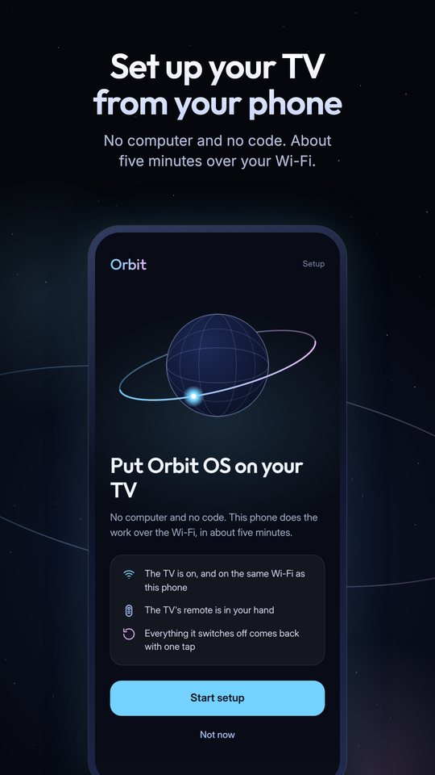
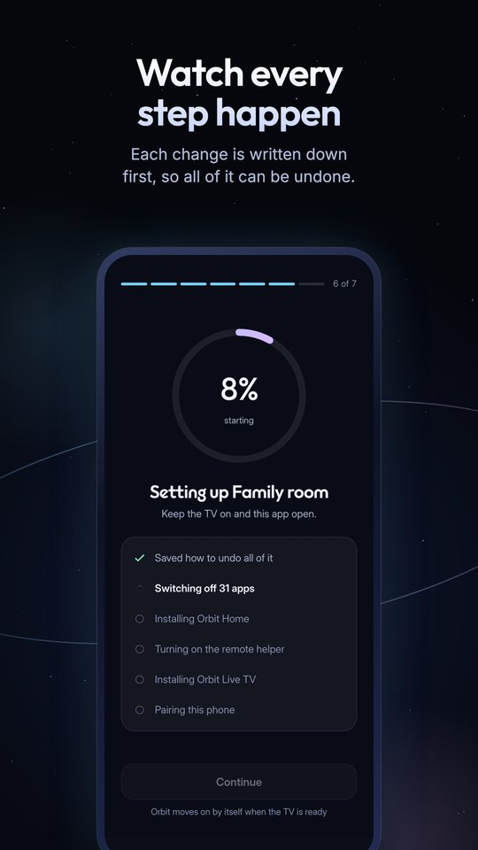
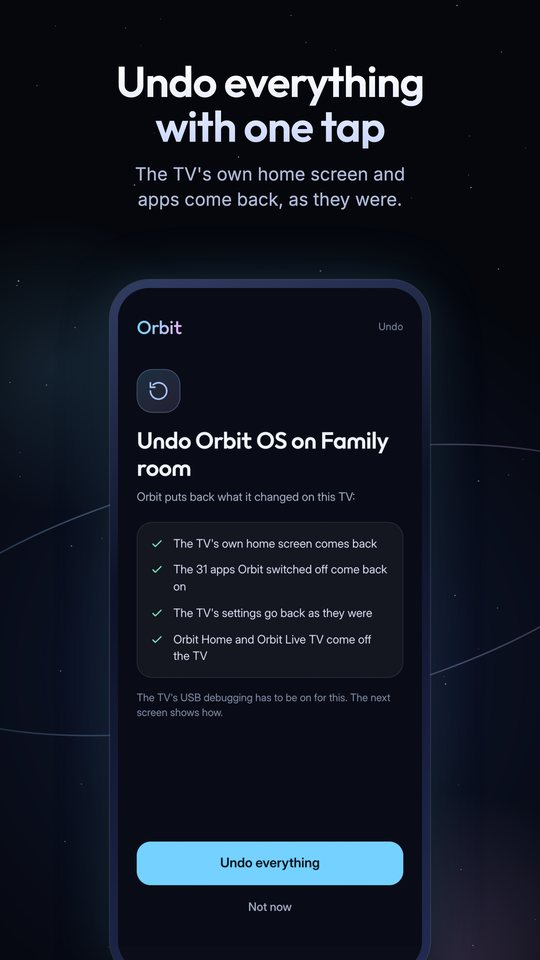

Your TV, calm again. Set up your Android TV from your phone: a calm home screen, a globe remote, and every change can be undone with one tap.



Orbit finds your TV on your Wi-Fi, asks five plain questions and shows the whole plan before it changes anything.
Roll the globe to move, tap for OK, hold for Home. Or use a classic D-pad.
Every change is written down first. One tap brings back the TV's own home screen, apps and settings.
No ads, no trackers. Sign-in is optional, and backups go to your own Google Drive.
Orbit doesn't root your TV, unlock it or change its firmware. It uses Android's own developer settings, installs two ordinary apps and switches off, never deletes, the preinstalled apps you choose, and Undo puts everything back. The warranty terms are your TV maker's, so if the TV ever goes for repair, use Undo everything in Orbit first and it is just as it came.
Yes. In Orbit, open Settings › This TV › Undo Orbit OS on this TV. Every app comes back on and the TV's own home screen returns.
Orbit is tested on the Xiaomi TV A Pro, and more TVs are coming. Tell us how it runs on yours, report a problem or suggest an idea in GitHub issues.